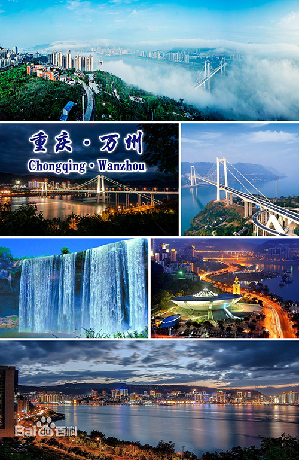

万州区

万州简介
万州区属重庆市辖区，位于长江上游地区、重庆东北部，处三峡库区腹心，为渝东北、川东、鄂西、陕南、黔东、湘西的物资集散地，是成渝城市群沿江城市带区域中心城市。
<<---万州长江xx桥
<<---万州大瀑布、万州体育馆
个人感想
虽然我从小生长在万州，但我对万州的了解还远远不够，很多地方都没去过，上了大学基本上更没有时间回去看一看，可能唯一的机会就是同学聚会的时候，可以到处逛一逛，不过自己在万州的成长经历却是非常宝贵的财富。